适用平台：格物 lattice · 企业业务本体平台（Beta V2.0） 教程版本：V2.0
实战对象：服务产品部-通用服务器原厂维保成本核算（项目 a9572b34…7f202，本体 b0da8871…68af v1.4）
数据来源：《成本基线.xlsx》（主数据）＋《成本核算逻辑.xlsx》（核算结果，仅用于验证）＋《通用服务器原厂维保_成本核算说明.docx》（建模规范）
📎 本教程所有截图均为平台实拍，与文中描述逐一对应；截图对应页面区域已在图注中标明。
Bearer token，之后所有 /api/* 请求带 Authorization: Bearer <token>。浏览器打开前端地址（如 http://localhost:8090）。未登录时全站只呈现登录卡片，输入管理员账号密码登录（初始管理员 admin）。登录成功后，顶栏右上角显示「当前用户（角色）」，左侧导航按权限矩阵渲染功能页。
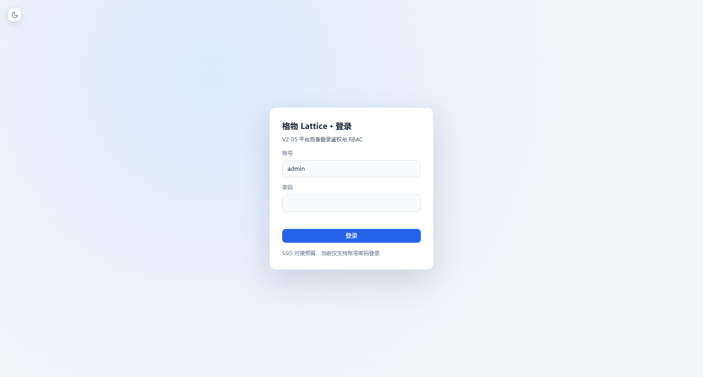
初始密码来源二选一：① 环境变量 ONTOLOGY_BOOTSTRAP_ADMIN_PASSWORD；② 旧版 backend/secrets/bootstrap_admin.txt（新版已废弃明文密码文件；库内密码哈希在重启后仍有效，旧密码仍可登录）。
POST /api/auth/login?mode=bearer
→ data.token # 后续请求带 Authorization: Bearer <token>localhost 在 Windows 会解析到 IPv6 ::1 导致脚本请求挂起，脚本一律用 http://127.0.0.1:8000。
（浏览器侧相反：前端页面请用 http://localhost:8090 打开——若用 127.0.0.1:8090 打开而 API 在 localhost:8000，两者属不同站点，SameSite=Lax 的 httpOnly 会话 Cookie 不会随跨站请求发送，会出现「登录状态已失效」循环。）左侧导航进入「用户与授权」页 → 右侧「新增用户」表单：账号 svcproduct、角色=建模人（可读可写，适合日常建模/导实例/建能力）、部门=服务产品部、密码 ≥8 位。提交后用户出现在左侧「用户与角色授权」列表，角色修改即时生效（无需重新登录）。
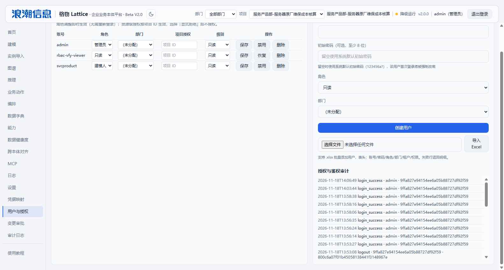
svcproduct（角色=建模人），右侧为「新增用户」表单（账号/初始密码/角色/部门），下方为授权与鉴权审计流水。顶栏项目已切换为「服务产品部-服务器原厂维保成本核算」。POST /api/auth/users
{username:"svcproduct", password:"≥8位", role:"modeler", department:"服务产品部", tenant_id:"default", grants:[]}角色枚举：admin(管理员) / modeler(建模人) / reviewer(审核人) / viewer(查看人)。
「首页」→ 项目管理 →「+ 新建项目」：名称 服务产品部-服务器原厂维保成本核算、所属部门=服务产品部、描述可写「基于成本基线.xlsx（主数据）+ 成本核算逻辑.xlsx（验证基准），按《成本核算说明.docx》构建本体与能力」。创建后顶栏「项目」下拉切换到该项目（多项目隔离：/api/* 一律带 ?project_id=）。
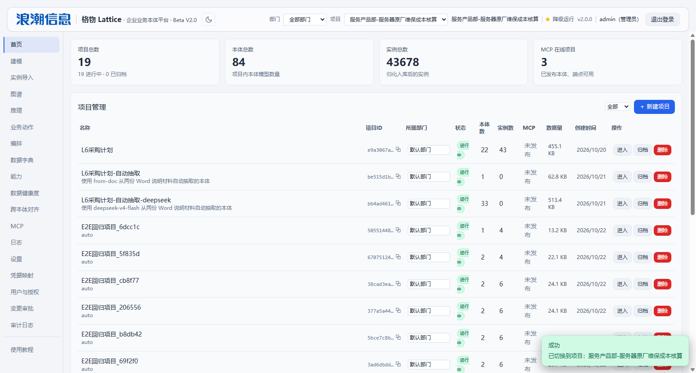
POST /api/projects {name, department:"服务产品部", description}「建模」页 →「+ 新建」本体：名称、版本、建模方式（manual）。本体卡片进入「编辑本体」后按「表单建模」逐个添加对象：每个对象填对象 ID / 对象名称 / 描述（业务语义定义 ≥5 字）、业务主键 stable_key（指向本对象某 string 属性；组合情况用合成 code 字段）、属性（名称/类型/必填/约束）与关系（目标对象/基数）。提交后本体处于 draft。
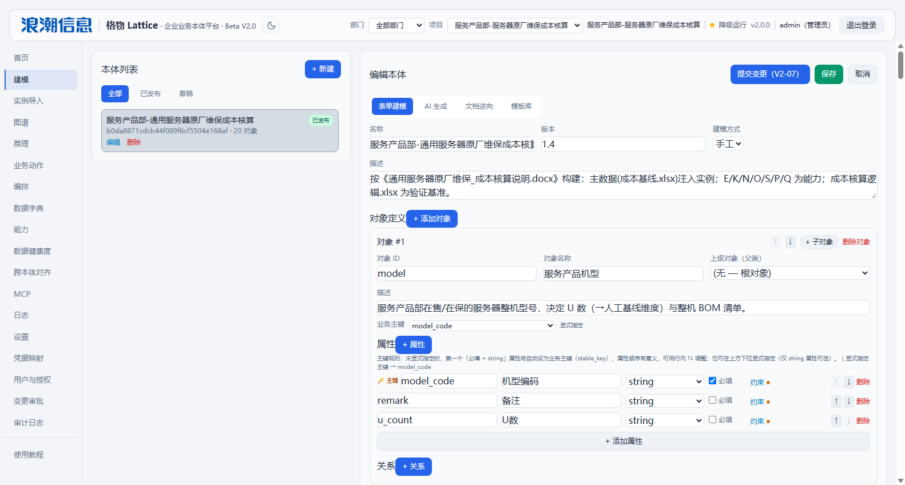
model（服务产品机型），描述「服务产品部在售/在保的服务器机型型号，决定 U 数（人工基线维度）与整机 BOM 清单」，业务主键=model_code，属性 model_code（主键标识）/remark/u_count；下方为「+ 添加属性」「关系 + 关联」区。右上角「提交变更 (V2-07)」按钮即已发布本体走变更提案的入口。| 对象 id | 名称 | 稳定键 | 关键属性 | 用途 |
|---|---|---|---|---|
model | 服务产品机型 | model_code | model_code/u_count/remark | 机型→U数档→人工基线 |
labor_baseline | 售后人工成本基线 | code | u_group/customer/product_line/region/service_class/unit_cost | E=C×D |
onsite_rate_baseline | 现场服务率基线 | code | product_line/customer/region/rate | 现场服务率 D |
spare_aux_baseline | 备件辅助成本基线 | code | country/unit_nd/unit_4h/unit_rma/unit_arma/tax_rate | K=H×G |
mgmt_cost_baseline | 管理成本基线 | code | customer/phase(实施/售后)/region/value | N=L×M |
service_level_coeff | 服务水平系数基线 | code | response_class/coeff | 4H×1.15 等 |
failure_rate_baseline | 部件故障率基线 | code | part_type/product_line/customer/rate | F=BOM×故障率 |
part_price | 备件单价 | part_pn | factory/part_pn/part_desc/unit_price | 备件成本 |
bom | 整机BOM | code | model_code/part_pn/qty/unit_price/cost | F 归集输入 |
warranty_cost | 维保成本核算结果 | code | region/service_type/E/K/N/O/S/P/Q/R | 结果/验证基准 |
onsite_labor_baseline 等 10 个 | 随需求补充：人天/差旅/驻场/资金占用/现场人工(NBD现场=1940、4H现场=4166)等基线对象 + 人天核算/焕新/单次维修/驻场等结果对象（见第 8 步核算域） | 后续 5 个核算域 | ||
版本演进（对象随需求补充，均通过兼容变更提案自动升版本）：v1.0（10 对象）→ v1.1（+人天/差旅/驻场/资金占用基线 + 5 个核算结果对象）→ v1.2 / v1.3 / v1.4（补字段 + 现场人工基线），最终 20 对象、515 实例。
active 本体不可直接编辑。在编辑本体内补充/修改对象后点「提交变更 (V2-07)」（图 3-1 右上角）走变更提案 changeset：兼容变更（新增可选属性/新增对象/放宽取值范围等）直接升小版本并自动发布（v1.0→…→v1.4 均为兼容升版）；不兼容变更（删属性/改类型/主键变化/收窄范围/删对象）须升大版本＋审批，通过前对外仍是旧版本。「变更审批」页可查看兼容性自动判定与状态机。
POST /api/ontologies?project_id=... # 新建 draft
POST /api/ontologies/{oid}/changesets # 已发布本体的变更提案（model 为完整新模型，兼容→自动升版）pattern 只认 ASCII；产品线分组 enum 是全角括号（如 服务器（SV、AI、边缘））；枚举值须与源表完全一致才能命中。preview → 候选(待审核) → 人工 approve(SHACL) → 落库。「实例导入」页：左侧为对象树（每对象显示实例数），选中对象后右侧出现「导入 / 添加实例」入口；「导入与审核」子标签提供多对象批量上传与「候选审核」队列（待审核/已入库/已驳回，支持批量批准/驳回/恢复/删除）。
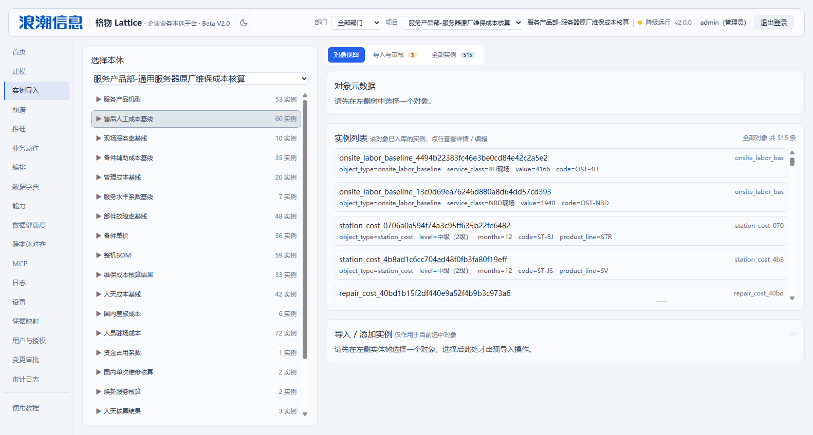
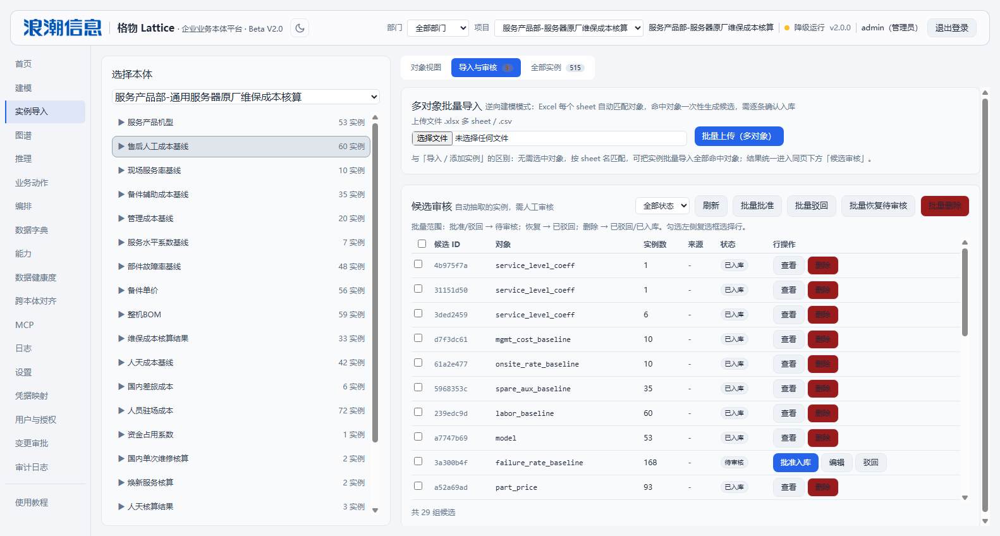
field_map：source.records 为 JSON dict 列表，空字段直接省略（避免空串触发 SHACL 枚举/必填报 Value Literal("") not in list）。object_type 放 body；field_map 放 body 且必须非空（identity map {k:k} 也行）。POST /api/ingest/preview?project_id=..
{"ontology_id":"...","object_type":"...","source":{"kind":"field_map","records":[...]},"mapping":{"field_map":{k:k}}}
POST /api/ingest/candidates/{candidate_id}/approve?project_id=..华夏\n（北京）），勿用 split("\n")[0] 截断，否则会把「华夏(北京)/华夏(津鲁冀)」合并导致 lookup 歧义。「能力」页 →「+ 新建能力」：name（小写下划线）、显示名、对象类型、表达式。表达式编辑器内可用 lookup('对象', {维度:值}, '属性')（回指基线实例）、ref('cap_xxx')（引用上游已发布能力）、if / if_null、四则运算；提供「保存」「校验公式（不落库）」「发布」按钮。
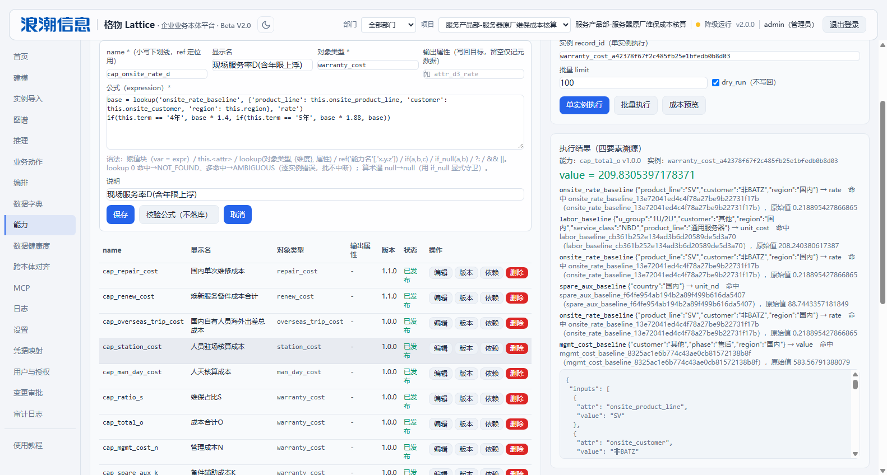
cap_onsite_rate_d（显示名「现场服务率D(含年限上浮)」，对象类型 warranty_cost），表达式为 base = lookup('onsite_rate_baseline', {'product_line': this.onsite_product_line, 'customer': this.onsite_customer, 'region': this.region}, 'rate') + 年限系数分支 if(this.term=='4年', base*1.4, if(this.term=='5年', base*1.88, base))；下方按钮为 保存 / 校验公式（不落库） / 取消。cap_onsite_rate_d = 现场服务率基线(产线SV×客户非BATZ×区域).rate × 年限系数
年限系数：3年=1.0；4年=×1.4；5年=×1.88
cap_labor_cost_e = ref(cap_onsite_rate_d) × 售后人工成本基线(u_group×客户×区域×服务等级).unit_cost
cap_spare_aux_k = ref(cap_onsite_rate_d) × 备件辅助成本基线(国家).unit_nd/unit_4h/unit_rma/unit_arma
cap_mgmt_cost_n = ref(cap_onsite_rate_d) × 管理成本基线(客户×售后×区域).value
cap_total_o = cap_labor_cost_e + spare_direct(F) + cap_spare_aux_k + cap_mgmt_cost_n
cap_ratio_s = ref(cap_total_o) / machine_cost(R=37672)后续 5 个核算域能力：cap_man_day_cost（人天×天数）、cap_station_cost（月成本×数量）、cap_overseas_trip_cost（差旅+服务商人天）、cap_renew_cost（平均价+备件辅助+×0.8%）、cap_repair_cost（人工+备件F+单件辅助+实施管理+资金占用）。
POST /api/capabilities?project_id=.. {name, object_type, expression, ...}
POST /api/capabilities/{cap_id}/publish # 锁定版本（下游 ref 才能解析）binds（a = this.x）是无条件预求值，键缺失即 MISSING_INPUT_ATTR；可选属性要内联进 if()。② 表达式最后位置避免多行嵌套 if()，先 bind 变量、final 只放单层选择。③ 下游 ref 上游，必须先 publish 上游能力，否则报 REF_NOT_RESOLVED。active、能力 active（引用被锁定），才能被 MCP/图谱/能力消费。「建模」页 → 本体卡片「发布」：draft → active，卡片显示「已发布」徽标与版本号（图 3-1 左上本体列表中该本体即「已发布 · v1.4 · 20 对象」）。「能力」页 → 每行「发布」：能力由草稿→active，状态列显示「已发布」+版本 v1.0.0；已发布能力内容变更自动发新版（minor+1，旧版可溯源），点行内「版本」可查看版本历史与逐版表达式。
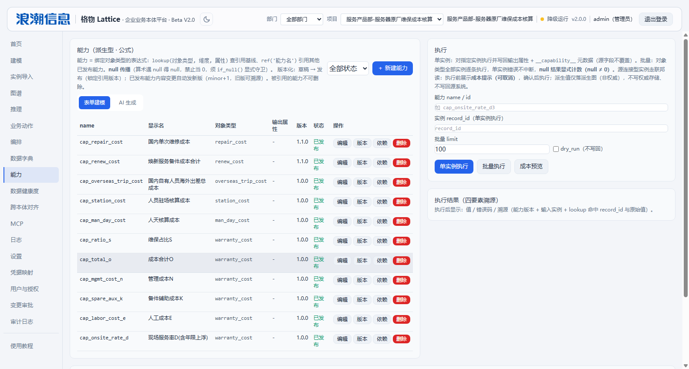
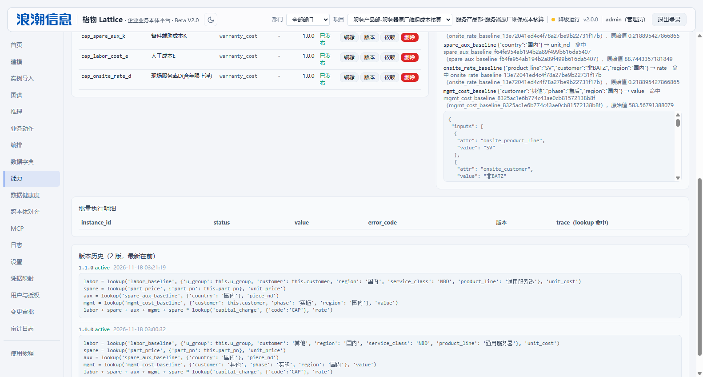
cap_repair_cost 共 2 版、最新在前——v1.1.0 active（修客户端「其他」为 this.customer 通用化取数）与 v1.0.0 active（初版，customer 硬编码"其他"），每版完整保留表达式，可溯源。POST /api/ontologies/{oid}/publish?project_id=..
POST /api/capabilities/{cap_id}/publish?project_id=..「MCP」页 → 本体发布清单 →「发布」：界面显示端点在线状态、Streamable HTTP / SSE 双传输说明、「接入 token」（生成/轮换/吊销，旧 token 立即失效）、以及可直接粘贴到 AI 平台的 mcpServers 配置 JSON。发布粒度是「单个本体」，同一项目多个已发布本体共享端点。
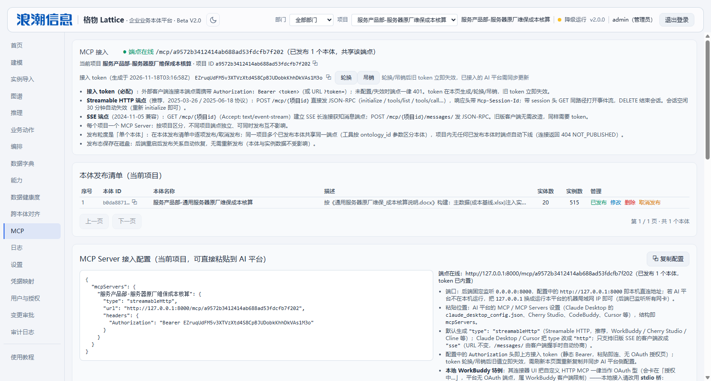
/mcp/a9572b3412414ab688ad53fdcfb7f202（已发布 1 个本体，共享该端点）」；接入 token 生成/轮换/吊销说明；Streamable HTTP（initialize / tools/list / tools/call，响应头带 Mcp-Session-Id）与 SSE 端点说明；「本体发布清单」中本体 b0da8871…68af（20 对象 / 515 实例）状态「已发布」；下方「MCP Server 接入配置」JSON 可直接复制到 Claude Desktop / CodeBuddy / Cursor 等 AI 平台。外部 Agent 侧：initialize（响应头取 Mcp-Session-Id 回传）→ tools/list → tools/call capability_call。本端点实际暴露 13 个工具：
ontology_query, inference_trace, instance_get, lineage_get, quality_health,
connection_health, action_invoke, term_lookup, capability_call,
alignment_candidates, alignment_declarations, fusion_requests, fusion_query{ "capability_name": "cap_total_o", "capability_version": "1.0.0",
"execution_channel": "mcp", // 证明确走 agent/MCP 通道
"status": "success", "value": 209.8305397178371,
"trace": {
"inputs": [ {"attr":"onsite_product_line","value":"SV"}, {"attr":"onsite_customer","value":"非BATZ"},
{"attr":"region","value":"国内"}, {"attr":"term","value":"3年"}, {"attr":"u_group","value":"1U/2U"},
{"attr":"customer","value":"其他"}, {"attr":"service_class","value":"NBD"},
{"attr":"spare_direct","value":17.0815949673332}, {"attr":"aux_country","value":"国内"} ],
"lookups": [ {"object_type":"onsite_rate_baseline","dims":{"product_line":"SV","customer":"非BATZ","region":"国内"},
"attr":"rate","matched_record_id":"onsite_rate_baseline_13e72041ed4c4f78a27be9b22731f17b",
"value":0.218895427866865,"matched_count":1,"selection_rule":"strict"},
{"object_type":"labor_baseline","dims":{"u_group":"1U/2U","customer":"其他","region":"国内",
"service_class":"NBD","product_line":"通用服务器"},"attr":"unit_cost",
"matched_record_id":"labor_baseline_cb361b252e134ad3b6d20589de5d3a70",
"value":208.240380617387,"matched_count":1} ], // 共 6 条 lookup 命中
"refs": [ {"name":"cap_onsite_rate_d","value":0.218895427866865},
{"name":"cap_labor_cost_e","value":45.582867214401745},
{"name":"cap_spare_aux_k","value":19.425729337792795},
{"name":"cap_mgmt_cost_n","value":127.74034819830935},
{"name":"cap_total_o","value":209.8305397178371} ] // 共 6 条 ref 链
} }返回 209.8305397 与结果表 209.8305 精确一致，execution_channel=mcp。lookup 每条带 matched_record_id 可回指，评委可手算复核（45.5829 + 17.0816 + 19.4257 + 127.7403 = 209.8305）。
POST /api/mcp/server/publish?project_id=<pid>&ontology_id=<oid>
POST /api/mcp/server/token?project_id=<pid> → data.token
POST /mcp/{project_id} # initialize → tools/list → tools/call capability_call--data-binary @file）。warranty_cost 实例上 dry_run，与《成本核算逻辑.xlsx》逐行比对，并不把待测结果落为实例。「能力」页右侧「执行」面板：能力 name/id 填 cap_total_o、实例 record_id 填目标实例（如 WC-3 国内·三年5×10×NBD），勾选「dry_run（不写回）」→ 单实例执行。执行结果区展示：状态 success/error、value、lookup 命中记录（matched_record_id 与原始值）、ref 链与 inputs 明细。
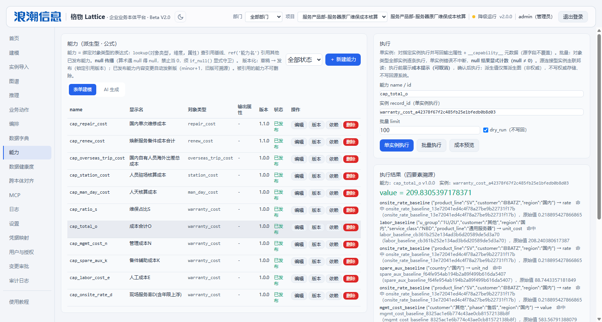
cap_total_o v1.0.0、实例 warranty_cost_a42378f…dbb03（WC-3），已勾选 dry_run；执行结果 value = 209.8305397178371，下方逐条列出 lookup 命中（onsite_rate_baseline 现场服务率 0.218895427866865、labor_baseline NBD unit_cost 208.240380617387、spare_aux_baseline unit_nd 88.7443357181849、mgmt_cost_baseline 售后 583.56791388079 等，均含 matched record_id 与原始值）与 inputs 覆盖明细（onsite_product_line=SV、onsite_customer=非BATZ、term=3年…）。| 核算域 | 内容 | 结果 |
|---|---|---|
| 通用服务器原厂维保 | 国内 15 行 A~S 全列（9 核心 E/K/N/O/S + 6 介质保留 O=F/S + P/Q 公式 P=O−O(3年NBD=209.8305)、Q=P(N)−P(N−1)） | ✅ 精确（O 差≈1e-13） |
| 国内单次维修 | 2 行 | ✅ 428.6732 / 402.2519 |
| 焕新服务 | 2 行 | ✅ 102.816 / 163.136 |
| 人天核算 | 3 行 | ✅ |
| 海外出差 | 2 行 | ✅ 421912 / 33336.24 |
| 人员驻场核算 | 2 行 | ✅ 江苏 120000 / 北京 156000（基准表为准） |
POST /api/capabilities/{cap_id}/execute {instance_id, inputs, dry_run:true}lookup + 计算式 产出，不能读预存结果。| # | 问题 | 判定 |
|---|---|---|
| 1 | 驻场「北京」核算表月成本引用 人员驻场成本!$C$10（STR·初级=9000），与其标注「STR中级驻场」错位，应为 $C$11（STR·中级=13000） | 源表引用行号偏移（差一行）→ 按基准表=13000×12=156000 |
| 2 | 单次维修 F 取备件成本「工厂=1600」单价（内存146/主板190），与 1100 厂（102/142）不同 | 反算确认 F 口径=工厂1600 |
| 3 | 海外（德国）现场服务率 D 4/5 年=0.3065/0.4115，不从海外基数 0.2157 按 ×1.4/×1.88 递增，反而等于国内基数 0.2189 递增值 | 源表口径矛盾，需业务裁定 |
数据口径不一致的处理原则是「本体保留源表原值，映射/归一放数据字典与比对层」：
part_price 按 factory='1600' 取数、cap_station_cost 按基准表中级取值）。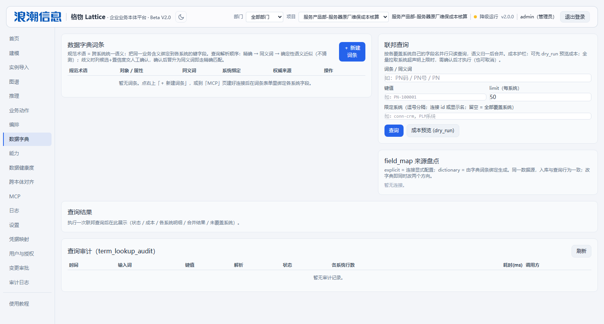
lookup + 计算式 产出。| 坑 | 规避 |
|---|---|
| localhost → IPv6 挂起（脚本） | 脚本用 http://127.0.0.1:8000；浏览器前端用 http://localhost:8090（保证会话 Cookie 同站） |
| 导入显示值 vs 精确值 | 读单元格原值（0.2189 vs 0.218895427866865 曾致 ~0.01 元偏差） |
| 列偏移 | 逐列核对（人天表/驻场表列位≠表头视觉） |
| 多行表头截断 | 服务商/供应商名用全名，勿 split("\n")[0] |
| 下游 ref 上游未发布 | 先 POST /api/capabilities/{id}/publish |
binds 无条件预求值 | 可选属性内联 if() |
| 尾位多行嵌套 if | 先 bind 变量，final 只放单层选择 |
| 空字段导入 | 用 preview（records dict）而非 upload（csv 空串） |
| MCP 首调 503 / 中文请求体 Parse error | 503 轮询重试；中文 body 写 UTF-8 文件后 --data-binary @file |
| F 备件直接成本 | 依赖 docx §4.3 精细模型 + 各厂商返修政策条件分支，非统一模板（当前以 spare_direct 承载） |
| 海外 D 口径 | 源表矛盾，需业务裁定 |
功能页：首页 / 建模 / 实例导入 / 图谱 / 推理 / 业务动作 / 编排 / 数据字典 / 能力 / 数据健康度 / 跨本体对齐 / MCP / 日志 / 设置 / 凭据映射 / 用户与授权 / 变更审批 / 审计日志。
| 操作 | 页 | API |
|---|---|---|
| 登录 | 设置 | POST /api/auth/login?mode=bearer |
| 建用户 | 用户与授权 | POST /api/auth/users |
| 建项目 | 首页/项目 | POST /api/projects |
| 建本体 | 建模 | POST /api/ontologies |
| 已发布本体改版 | 建模→提交变更 / 变更审批 | POST /api/ontologies/{id}/changesets |
| 发布本体 | 建模 | POST /api/ontologies/{id}/publish |
| 导实例 | 实例导入 | POST /api/ingest/preview → /candidates/{id}/approve |
| 建能力 | 能力 | POST /api/capabilities |
| 执行能力 | 能力→执行面板 | POST /api/capabilities/{id}/execute |
| 发布能力 | 能力 | POST /api/capabilities/{id}/publish |
| 发布 MCP | MCP | POST /api/mcp/server/publish |
| MCP 令牌 | MCP | POST /api/mcp/server/token |
| MCP 消费 | 外部 Agent | /mcp/{project_id}（initialize → tools/list → capability_call 等） |
?project_id=；能力按 cap_id 调用（按 name 会 NOT_FOUND，UI 面板填 name 会自动解析为 id）；脚本端 HTTP 客户端注意平台返回的 (status, dict) 结构。